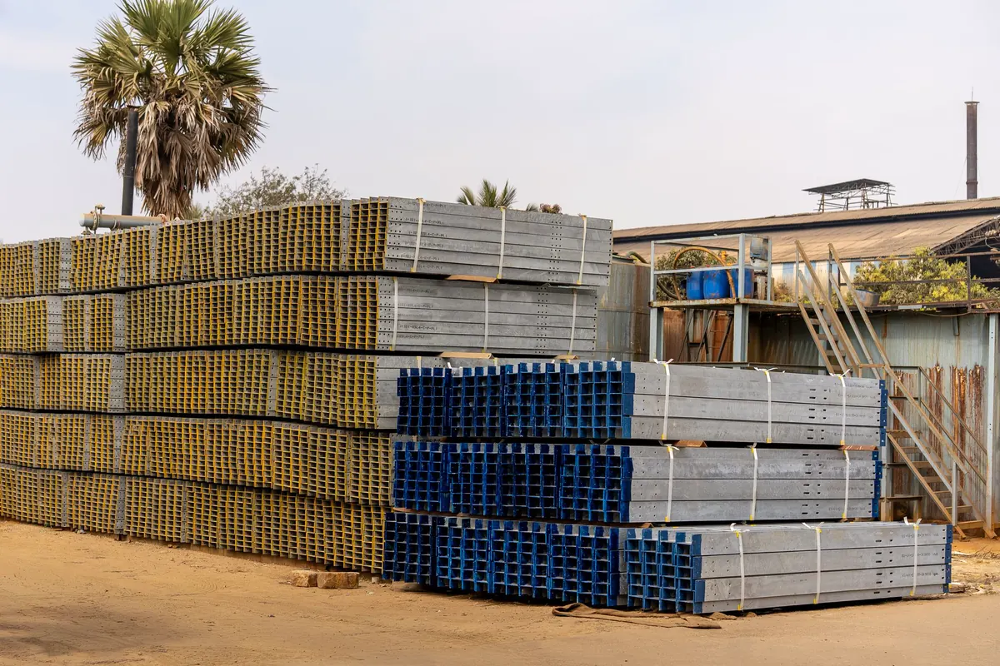
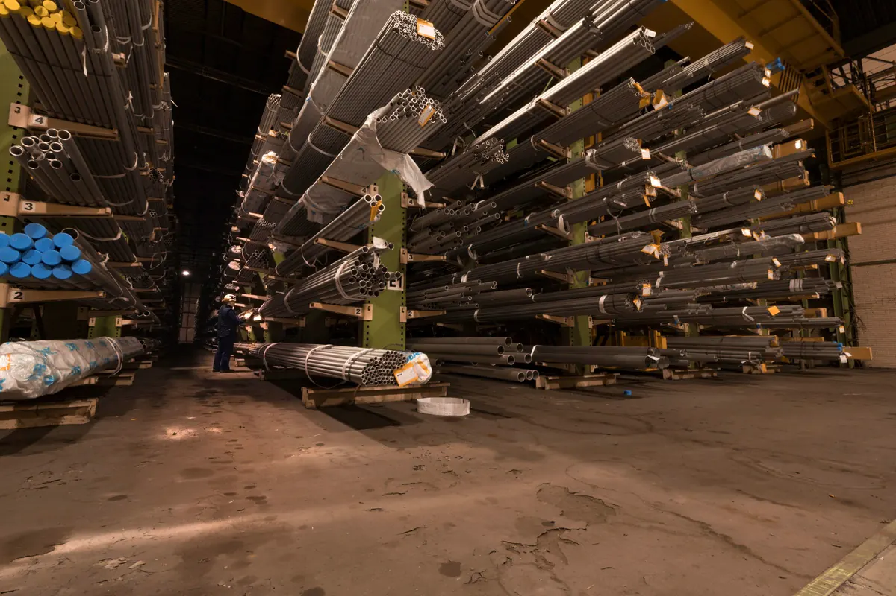
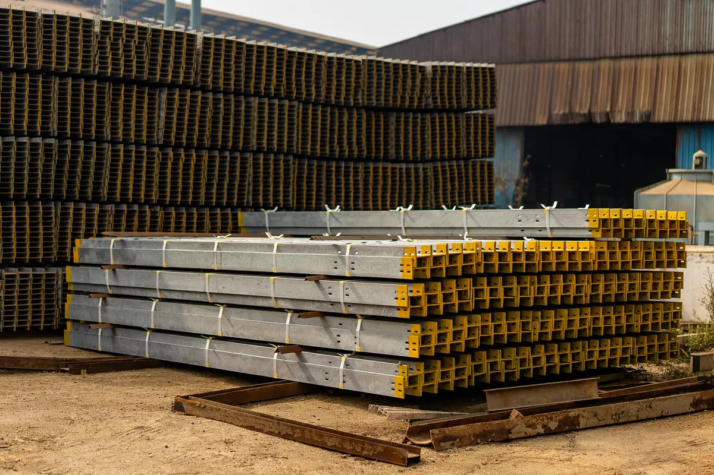

Onde comprar perfil metálico no ES com engenharia por trás
A Axial Engenharia fornece perfil metálico e aço estrutural para construtoras, serralherias, caldeirarias e donos de obra em Vitória, Vila Velha, Serra, Cariacica e toda a Grande Vitória. Não vendemos barra no balcão: partimos do projeto, levantamos o material e entregamos no fabricante que você escolher ou direto na obra, na ordem da montagem.
Esta página trata do material. A visão geral do serviço está em estruturas metálicas em Vitória ES; o recebimento e a instalação das peças que vêm do seu fabricante, na montagem de estrutura pré-fabricada; e o içamento em campo, na montagem de estruturas metálicas.

Por que comprar aço estrutural com a Axial
Levantamento a partir do projeto
Tiramos a lista de materiais das pranchas: perfil, bitola, comprimento, quantidade e peso de cada posição. Sem projeto, o projeto estrutural vem antes.
Quantidade certa de barras
O levantamento parte do comprimento de cada peça do projeto e dos comprimentos comerciais das barras e chapas. Não é o peso da lista que diz quantas barras comprar.
Certificado de usina e rastreabilidade
Cada lote chega com certificado de qualidade e marcação de corrida, para ligar cada perfil e chapa ao seu documento.
Para o seu fabricante ou para a obra
O material vai para o fabricante que você contratar ou direto para o canteiro, identificado e acompanhado do romaneio.
Entrega por etapa da obra
Bases e chumbadores, depois pilares e vigas, depois terças e cobertura. Canteiro livre e material menos tempo exposto à maresia.
Montagem pela nossa equipe
Se você quiser, conferimos na chegada as peças que o seu fabricante entregar e montamos a estrutura, com engenheiro responsável e ART no CREA-ES.

Tipos de perfil metálico e uso típico
O perfil é escolhido no projeto. Nosso papel é entregar exatamente o especificado e apontar quando uma troca é aceitável e quando exige nova verificação do calculista.
| Perfil / material | Uso típico | Ponto de atenção na compra |
|---|---|---|
| Perfil W e HP laminado | Viga metálica, pilar de galpão, mezanino, estaca (HP) | Conferir bitola e massa linear: perfis de mesma altura têm pesos diferentes |
| Perfil soldado VS, CS e CVS (NBR 5884) | Vigas e pilares além do que o laminado oferece, seção variável | Produzido sob encomenda; inspeção da solda de composição |
| Perfil U, Ue e Z formado a frio (NBR 6355) | Terça de cobertura, travessa de fechamento, montante | Espessura da chapa e proteção contra corrosão; amassa fácil no transporte |
| Tubo redondo, quadrado e retangular | Treliça, pilar esbelto, guarda-corpo, cobertura aparente | Espessura de parede e se é com ou sem costura, conforme o projeto |
| Cantoneira de abas iguais ou desiguais | Contraventamento, ligação, treliça leve | Abas e espessura conforme a lista |
| Chapa grossa e chapa xadrez | Chapa de base, ligação, enrijecedor; piso de plataforma e escada | Espessura e formato comercial da chapa conforme a lista |
| Terça, telha e acessórios | Cobertura e fechamento | Vão admissível da telha entre terças e comprimento por água |
Aço ASTM A36 ou A572 Grau 50
O aço vem especificado junto com o perfil. Uma viga calculada em A572 Grau 50 pode não passar se for comprada em A36 — por isso a lista traz a norma do aço ao lado de cada bitola.
| Aço | Escoamento mínimo | Uso usual |
|---|---|---|
| ASTM A36 | 250 MPa | Chapas, cantoneiras e peças de ligação |
| ASTM A572 Grau 50 | 345 MPa | Perfis laminados W e HP; perfis soldados onde o projeto quer reduzir peso |
Troca de aço ou de perfil "equivalente" só com aval de quem calculou a estrutura, conforme a ABNT NBR 8800. Perfil formado a frio segue a ABNT NBR 14762.

Material no seu fabricante ou direto na obra?
O aço sai do levantamento e segue para onde a estrutura vai ser trabalhada. A escolha depende de quem você contratou para fabricar e de como a obra está organizada.
| Critério | Entrega no seu fabricante | Entrega direto na obra |
|---|---|---|
| Indicado para | Estrutura que o fabricante contratado por você vai preparar a partir do detalhamento | Serralheria ou equipe que trabalha no próprio canteiro |
| O que é entregue | Perfis, tubos e chapas em medida comercial, identificados | Perfis, tubos e chapas em medida comercial, identificados |
| Documentos | Romaneio e certificado de usina de cada corrida | Romaneio e certificado de usina de cada corrida |
| Rastreabilidade | O fabricante mantém a marcação de corrida nas peças que produz | Marcação de corrida à vista nos feixes estocados na obra |
| Nosso papel | Levantamento e fornecimento; se contratados, conferência das peças na chegada e montagem | Levantamento, fornecimento e entrega por etapa da obra |
Para comparar propostas de forma honesta: peso da lista de materiais mais perdas previstas, com o mesmo aço e a mesma bitola — não preço de quilo isolado. Quando as peças do seu fabricante chegam à obra, conferimos marcação, dimensão, furação e pintura antes da montagem de estrutura pré-fabricada e, quando o projeto pede, fazemos ensaios não destrutivos.

Certificado de usina: a prova de que o aço é o do projeto
- O que traz: corrida (lote), norma do aço, composição química e ensaios mecânicos.
- Por que exigir: sem ele, a resistência do aço vira suposição e a ART fica sem base documental.
- Só vale com marcação: perfil e chapa chegam identificados, e o fabricante precisa manter a marca nas peças que produz.
- Sem certificado, não entra: material que não bate com o documento fica fora da estrutura.
Essa rastreabilidade sustenta o data book da obra e qualquer laudo técnico com ART pedido depois.
Como trabalhamos: do projeto ao romaneio
Contato pelo WhatsApp
Você manda o projeto ou a lista. Retorno do escopo no mesmo dia útil.
Levantamento de material
Entregável: lista de materiais conferida, com perfil, aço, quantidade e peso.
Quantidade de barras e chapas
Entregável: quantidade de barras e chapas comerciais a partir dos comprimentos das peças do projeto.
Proposta comparável
Entregável: material, aço, local de entrega (seu fabricante ou a obra) e cronograma de entrega.
Compra e identificação
Entregável: perfis, tubos e chapas identificados e certificado de usina de cada corrida.
Entrega por etapa
Entregável: romaneio conferido contra a lista na descarga — divergência resolvida no dia.
Se a montagem também for nossa, conferimos na chegada as peças que o seu fabricante entregar, montamos e fechamos com as-built e ART — é o caso de um galpão metálico ou de uma cobertura metálica para quadra.
Tem o projeto ou a lista de materiais?
Mande pelo WhatsApp. Devolvemos o levantamento conferido e a proposta de perfil e aço estrutural.

Entrega por etapa e armazenamento na obra
Descarregar a estrutura inteira no primeiro dia toma o canteiro e deixa o aço exposto. A entrega acompanha a montagem, e na obra alguns cuidados preservam o material:
- Nada direto no chão: perfis sobre calços, sem contato com terra ou poça;
- Leve inclinação: para a água não empoçar dentro do perfil U;
- Galvanizado seco e ventilado: feixe molhado e abafado forma oxidação branca;
- Identificação à vista: marcas voltadas para fora, feixes separados por etapa;
- Movimentação com cinta: corrente sem proteção amassa perfil formado a frio.
Com maresia na maior parte da Grande Vitória, a proteção contra corrosão é definida no projeto — os critérios são os mesmos de patologias e corrosão estrutural. Numa obra em estrutura metálica completa, o cronograma de entrega é montado junto com o do seu fabricante e o da montagem.
O que mandar para receber orçamento
- Projeto em PDF ou DWG, ou a lista de materiais;
- Aço especificado de cada item (A36, A572 Grau 50 etc.);
- Local de entrega: o seu fabricante ou a obra;
- Endereço e acesso para caminhão;
- Se quer entrega por etapa, e em que ordem;
- Se precisa também de projeto estrutural ou de montagem.
Perguntas frequentes sobre perfil metálico e aço estrutural
Vocês vendem só o material, sem montar?
Sim. Fornecemos para serralherias, caldeirarias, fabricantes de estrutura e construtoras: levantamos o material a partir do projeto e entregamos perfis, tubos e chapas identificados e com certificado de usina, no fabricante que você escolher ou direto na obra. Se você preferir, recebemos e conferimos as peças que o seu fabricante entregar e fazemos a montagem, com ART.
Quanto custa o perfil metálico?
O preço sai da lista de materiais: peso de cada perfil, aço especificado, quantidade de barras e chapas comerciais e a logística de entrega. Por isso não passamos preço de quilo sem lista. Mande o projeto ou a lista pelo WhatsApp e retornamos o escopo no mesmo dia útil.
Não tenho projeto, só a ideia da estrutura. Vocês atendem?
Sim, mas o projeto vem antes do aço. Sem cálculo não há como definir perfil, bitola e aço com segurança. Fazemos o projeto estrutural pelas normas ABNT NBR 8800 e NBR 14762, com vento pela NBR 6123, e depois levantamos o material a partir dele.
Qual a diferença entre o aço ASTM A36 e o A572 Grau 50?
O A572 Grau 50 tem limite de escoamento mínimo de 345 MPa, contra 250 MPa do A36. Por isso é o aço usual dos perfis laminados W e HP e permite estruturas mais leves. O A36 continua corrente em chapas, cantoneiras e peças de ligação. Qual usar em cada peça é definição do projeto, e trocar um pelo outro exige verificação do calculista.
Preciso exigir o certificado de qualidade da usina?
Sim. O certificado identifica a corrida, a norma do aço, a composição química e os ensaios mecânicos do lote, e prova que o material entregue é o especificado. Ele só vale se o aço chegar marcado de forma que dê para ligar cada perfil ou chapa ao documento. Sem isso, a resistência do material vira suposição.
Quanto material se perde no corte das barras?
Depende de como as peças do projeto se distribuem nas barras, não de um percentual fixo. Perfis e tubos vêm em comprimentos comerciais e chapas em formatos padronizados; por isso o levantamento parte dos comprimentos de cada peça para definir quantas barras e chapas comprar. Comprar só pelo peso da lista costuma dar barra faltando ou sobra que ninguém usa.
Vocês entregam em etapas e em toda a Grande Vitória?
Sim. A sede fica em Vila Velha e atendemos Vitória, Serra, Cariacica, Viana, Guarapari e toda a Grande Vitória. A entrega acompanha o cronograma da obra: chumbadores e bases, depois pilares e vigas, depois terças e cobertura, cada carga conferida pelo romaneio na descarga.
Perfil metálico e aço estrutural na Grande Vitória
Fornecimento de perfis, tubos e chapas para obras e oficinas da região: